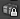
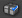
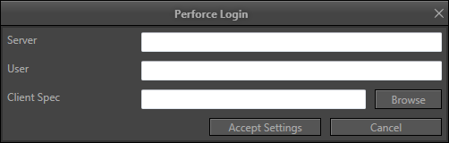

UDN
Search public documentation:
SCCIntegrationCH
English Translation
日本語訳
한국어
Interested in the Unreal Engine?
Visit the Unreal Technology site.
Looking for jobs and company info?
Check out the Epic games site.
Questions about support via UDN?
Contact the UDN Staff
日本語訳
한국어
Interested in the Unreal Engine?
Visit the Unreal Technology site.
Looking for jobs and company info?
Check out the Epic games site.
Questions about support via UDN?
Contact the UDN Staff
源代码控制集成
概述
登录
- 在文本编辑器中打开
EditorUserSettings.ini 文件。 - 定位到[SourceControl]部分
- 设置：Disabled=False
- 保存文件！
源代码控制包图标
| 图标 | 意思 |
|---|---|
 | 文件可以编辑，因为您已经将其迁出。 |
|  | 文件是只读的 - 您没有将其迁出。 |
|  | 文件被另一个用户迁出。 |
| 您没有最新版本的文件。 | |
 | 文件不是 SCC depot 的一部分（ 它需要被添加到 SCC depot 中 ）。 |
文件被您迁出并且可以进行编辑。您为编辑器打开的包也显示为粗体。
您没有迁出文件，并且您可以迁出它。这意味着当前的文件在您的硬盘上并且没有其他人迁出它。如果您需要那个文件，可以直接获取它！
其他人迁出了那个文件。因为多个人不能同时迁出同一个二进制文件，这意味着直到它被迁入为止您都不能迁出它。
没有人迁出该文件，但是您没有该文件的最新版本。您不能迁出这个文件，除非您关闭 UnrealEd、重新启动您的 SCC、同步文件到当前版本，然后在从新启动您的 UnrealEd。
该文件是新的，并且它不是 SCC depot 的一部分。您可以使用菜单中的“Add（添加）”按钮把这个新文件添加到源代码控制中。
源代码控制菜单
 通过右击内容浏览器中的一个包或资源您将会看到一个关联菜单。您可以从这里访问源代码控制的子菜单。
通过右击内容浏览器中的一个包或资源您将会看到一个关联菜单。您可以从这里访问源代码控制的子菜单。
- Refresh（刷新） 内容浏览器中的包的状态仅是自上一次内容浏览器刷新后的状态。如果您想立即更新这些状态，您可以使用这个选项。
- Check Out（迁出） 首先它将会刷新文件的状态，并确定它是否仍然可以被迁出。如果可以，它将会从 SCC depot 中迁出那个文件。
- Submit（提交）... 将会把文件再提交到 SCC depot 中。根据您的 SCC 提供者的不同，这将会弹出一个对话框要求您填写迁入注释并提供给您几个选项。这个选项仅当文件被迁出到您本地时才可用。
- Revert（回滚） 将会把文件回滚到 depot 中的该文件的最近修订版本。您对该文件自它最近一次提交后所保存的任何改变都将会被丢弃。这个选项仅当文件被迁出到您本地时才可用。
- Revision History（修订历史）... 如果 SCC 提供者支持这个功能，这将会弹出一个对话框显示选中文件的修订历史。
其它的工作流程功能
根据修改提示迁出文件
 无论何时，当一个包被标记为‘脏’包时（那些需要保存的包），您将会注意到会有一个对话框出现来询问您是否想把包从源代码控制中迁出。这允许您快速您迁出您正在处理的包，您不需要跳转到内容浏览器查找它们。这个对话框仅在包第一次被修改时显示，直到包被保存并迁入到源代码控制之前它将不会重新出现。编辑器也会在较慢的操作期间使所有被修改的包排队。比如构建光照可能会修改许多包。将会提示您一次迁出所有的包。
无论何时，当一个包被标记为‘脏’包时（那些需要保存的包），您将会注意到会有一个对话框出现来询问您是否想把包从源代码控制中迁出。这允许您快速您迁出您正在处理的包，您不需要跳转到内容浏览器查找它们。这个对话框仅在包第一次被修改时显示，直到包被保存并迁入到源代码控制之前它将不会重新出现。编辑器也会在较慢的操作期间使所有被修改的包排队。比如构建光照可能会修改许多包。将会提示您一次迁出所有的包。
- Check Out Selected（迁出选中的包）： 从源代码控制中迁出选中的包。注意：Ghosted 包不能被迁出，因为它们已经被其他人迁出或者当前它不是最新版本。
- Make Writable（使包可读）： 使选中的包变为可读状态。甚至可以使得 ghosted（幽灵）包是可写的。简单地简单它名称旁的复选框即可。这是将会在ghosted(幽灵)包上出现一个“正方形”图标。这是通知您如果您点击“Check Out Selected（迁出选中的包）”按钮，这些包将会被忽略。注意，通常如果您的源码控制提供者设置您要迁出的文件是只读的，那么最好不要使用这个选项，因为这会使得源码控制提供者不知道您对文件所做的修改。
- Ask Me Later（稍后询问）： 不迁出任何包并且在编辑器会话期间将不会询问您是否迁出列表中的包。注意：当使用某些保存的功能后将仍然会提示您迁出包。
在保存期间迁出包
在编辑器中的许多保存选项也会提示您从源代码控制中迁出包。某些源代码控制提供者将会设置没有迁出的包为只读状态。编辑器不能保存只读文件，所以您必须迁出它们或者使它们处于可写状态时才能保存它们。关于保存操作的更多信息，请参照编辑器包的保存步骤和UnrealEd 用户指南页面。Perforce Specifics（Perforce 规格书）
Perforce 连接对话框

当您第一次启用源代码控制，在打开编辑器时，您将会看到这个对话框。- Server（服务器）： 您的 Perforce 服务器地址及端口。
- User（用户名）： 您的 Perforce 用户名。
- Client Spec（客户端规格说明）： 当迁出或提交文件时要使用的客户端规格说明。在新版本的 Perforce 中也称为 workspace。当您输入用户名后，您可以可选地浏览查看和您的用户名相关的客户端规格说明。